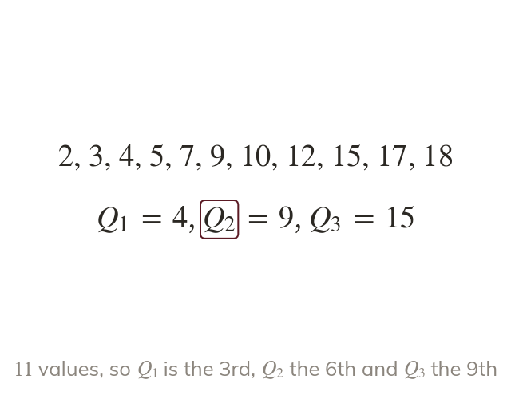
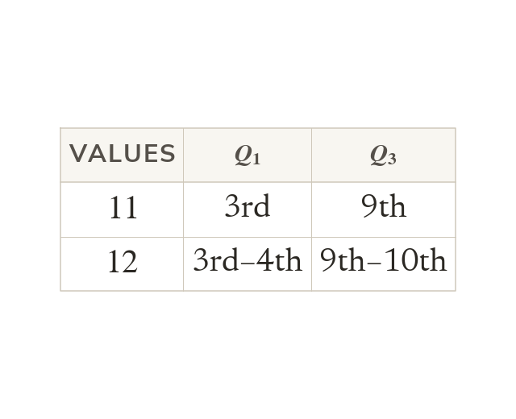
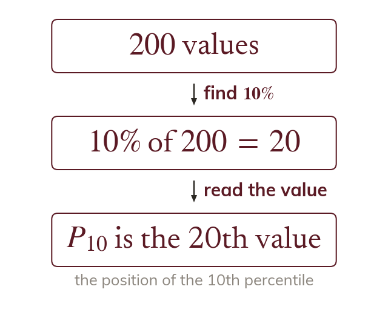
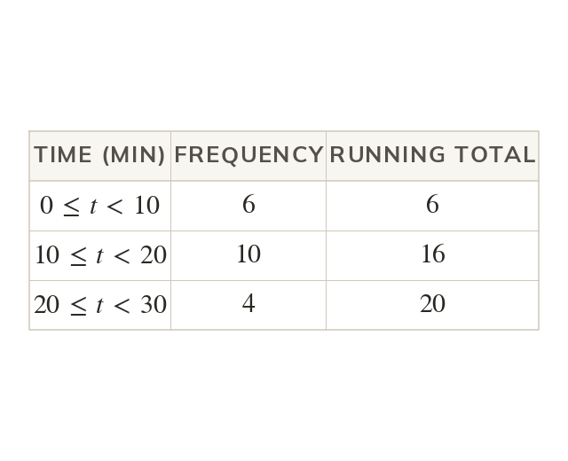
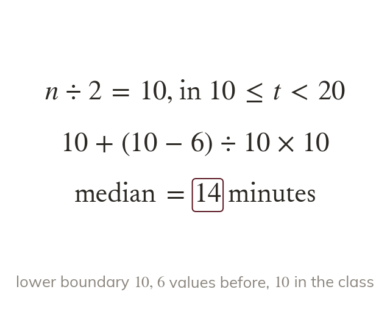
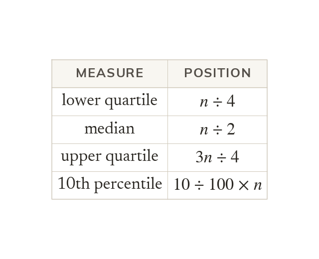
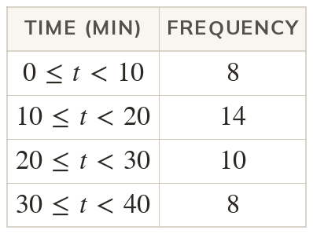
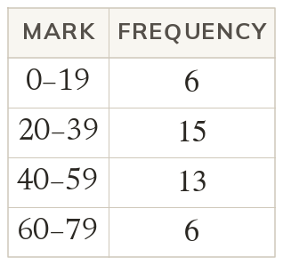

Quartiles
The lower quartile the median and the upper quartile split ordered data into four equal parts. A quarter of the data lie below
The median and quartiles locate the middle and the quarters of a data set, and percentiles any point in it. For grouped data they are estimated by interpolation, and the next lesson subtracts them to measure spread.
Work down the page at your own pace. Write every answer in your book first, then click to check it.
Read each card, then follow the worked examples one step at a time.

The lower quartile the median and the upper quartile split ordered data into four equal parts. A quarter of the data lie below

For find and for find
If it is a whole number, take halfway between that value and the next; if not, round up.

Percentiles split the data into parts. The 10th percentile has of the data below it, at position
Pick an answer. If it's wrong, the feedback tells you which mistake it was.
Write the blanks in your book first, then tap each one to check.
Read each card, then follow the worked examples one step at a time.

In grouped data the values in a class are not known. Assume they are spread evenly through the class, and use the running totals to find the class that holds the median.

Median = lower boundary + − values before) ÷ class frequency × class width. The median is of the values into this class.

With gaps, start from the lower class boundary, such as for 20–29
A quartile or percentile uses its own position in the same way.


Pick an answer. If it's wrong, the feedback tells you which mistake it was.
Write the blanks in your book first, then tap each one to check.
Finished? Next lesson: 12.S2.3 Measures of Spread.
For each skill, tap the one that is true for you today. Your Revise pages start with anything you mark Not yet.
Your ratings are saved on this device only.
Log in, then search for a code to practise that skill.